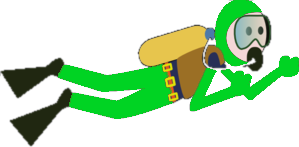
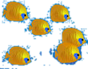
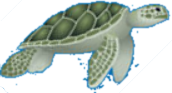

Thủy Cung
Đổi cảnh
Phát nhạc
Dưới
mặt biển.
Xem toàn cảnh
→



Thủy cung Hải Lưu
Tạm dừng
Phát tiếp
Chọn góc quan sát
Toàn cảnh
Cả rạn san hô
→
Thợ lặn
Ba nhịp lặn khác nhau
→
Sinh vật biển
Cá mập, rùa và đàn cá
→